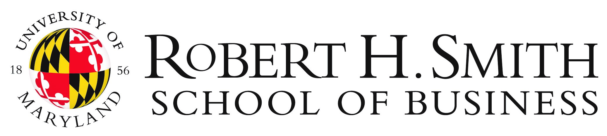
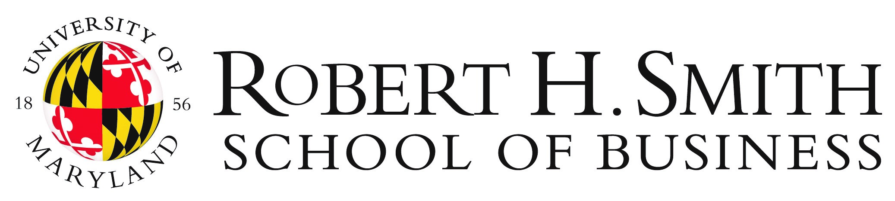

AI-SCORE 2024
The Artificial Intelligence School for Computer Science and Operations Research Education
Washington DC, May 27 - June 1
Washington DC, May 27 - June 1
 

The operations research (OR) and computer science (CS) communities have recently begun cross-fertilizing their respective strengths in developing foundational methodological and computational tools for artificial intelligence (AI) – enabling decision-making in a broad range of use-inspired problem domains, striving to reach the full latent potential of efforts in individual fields. New methodologies that permit the automated integration of model-building (a focus of OR approaches) and data-driven (a focus of CS approaches) technologies have the potential to combine the best of both worlds, to problems that go beyond the current capabilities of either community. Potential synergies run along multiple fronts, such as combining the computational paradigms and methodological/algorithmic approaches from OR and CS to improve interpretability, trustworthiness, and fairness in decision-making; and combining CS capabilities that can exploit massive data-driven methods with OR capabilities that can capture salient features of complex systems by using a model-based approach to drive effective decision-making.
Professional communities in both fields – namely, INFORMS representing OR researchers and ACM SIGAI, representing CS researchers – that convened in the workshops funded by the Computing Research Association’s Computing Community Consortium, inspired the formation of a dedicated “School” to (i) train the next generation to be dually conversant in both methodological traditions, and (ii) pose challenge problems that are positioned to excite researchers across the CS-OR spectrum, to spur the kinds of advances we believe are possible. We are grateful to the organizers of the CCC Workshops, to INFORMS, and SIGAI for the inspiration.
The inaugural AI-SCORE school is generously sponsored by the National Science Foundation, SIGACT, the University of Maryland Smith School of Business, INFORMS, SIGAI, and AI Journal.
Keynote lectures by senior researchers will provide overviews of the evolution of foundational OR and AI-related concepts; to introduce bridges that have been built across these fields thus far, and present vision towards future research.
Profs. Michael Fu (University of Maryland), Kevin Leyton-Brown (University of British Columbia), Tuomas Sandholm (Carnegie Mellon University) and David Shmoys (Cornell University) will keynote the inaugural AI-SCORE summer school.
The Fairness module will be led by Profs. Siddhartha Banerjee (Cornell University) and Aaron Roth (University of Pennsylvania), and the Reinforcement Learning module by Profs. Vivek Farias (Massachusetts Institute of Technology) and Scott Sanner (University of Toronto). They will jointly create thematic tutorials accompanied by curated datasets and exercises involving hands-on participation by students in cross-disciplinary teams.
Please apply at the Google form here. The form will request the student’s CV, a one-page (maximum) statement describing the problem area at the intersection of OR and CS/AI being explored by the student as a PhD topic; and a short statement from the PhD advisor confirming the student's research area in OR/AI andthe anticipated benefit (maximum one page).